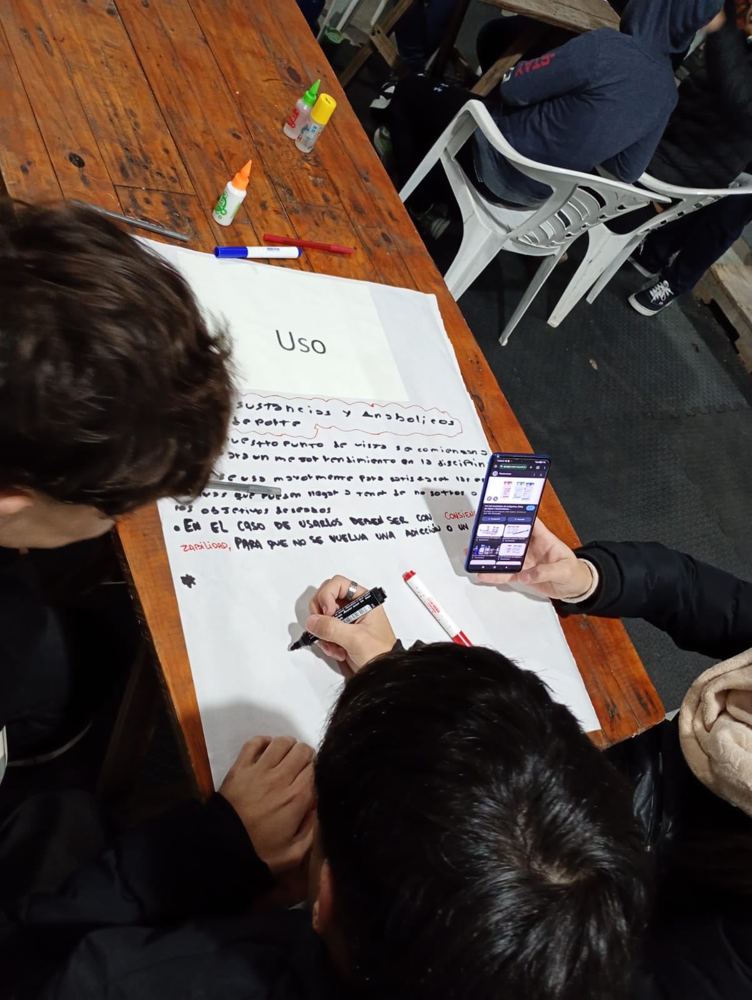
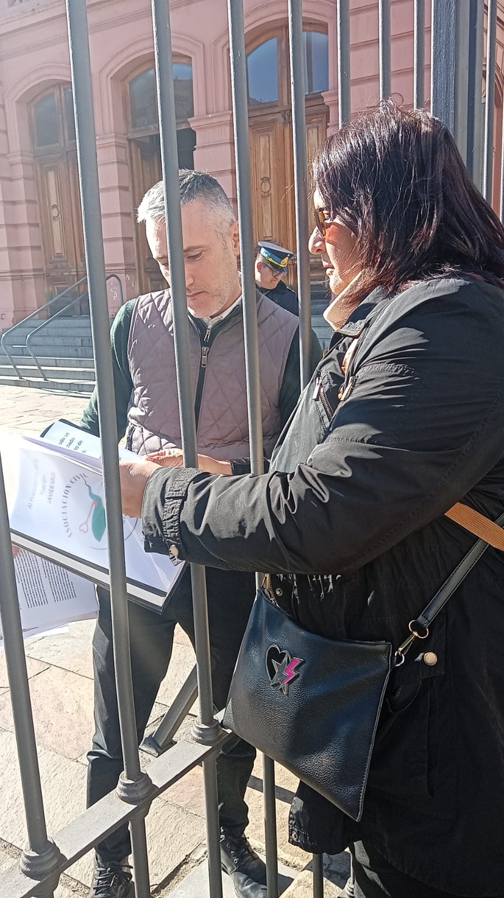
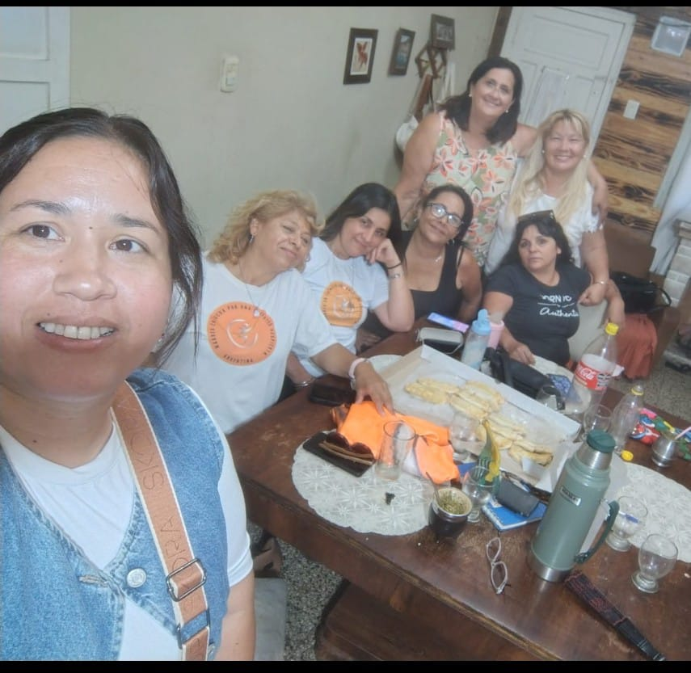
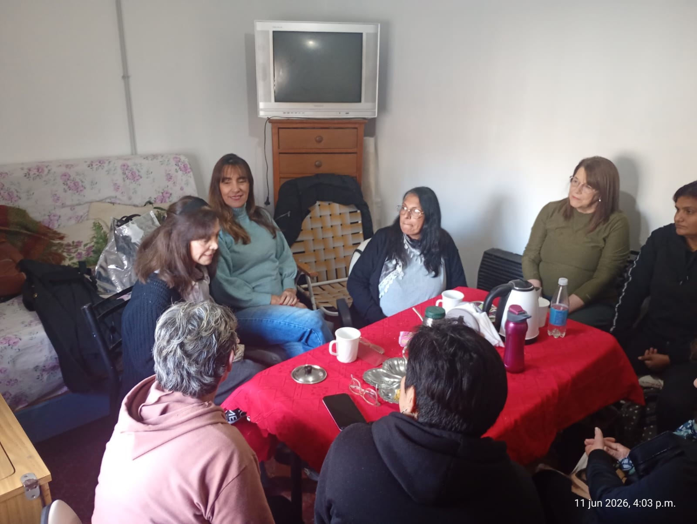
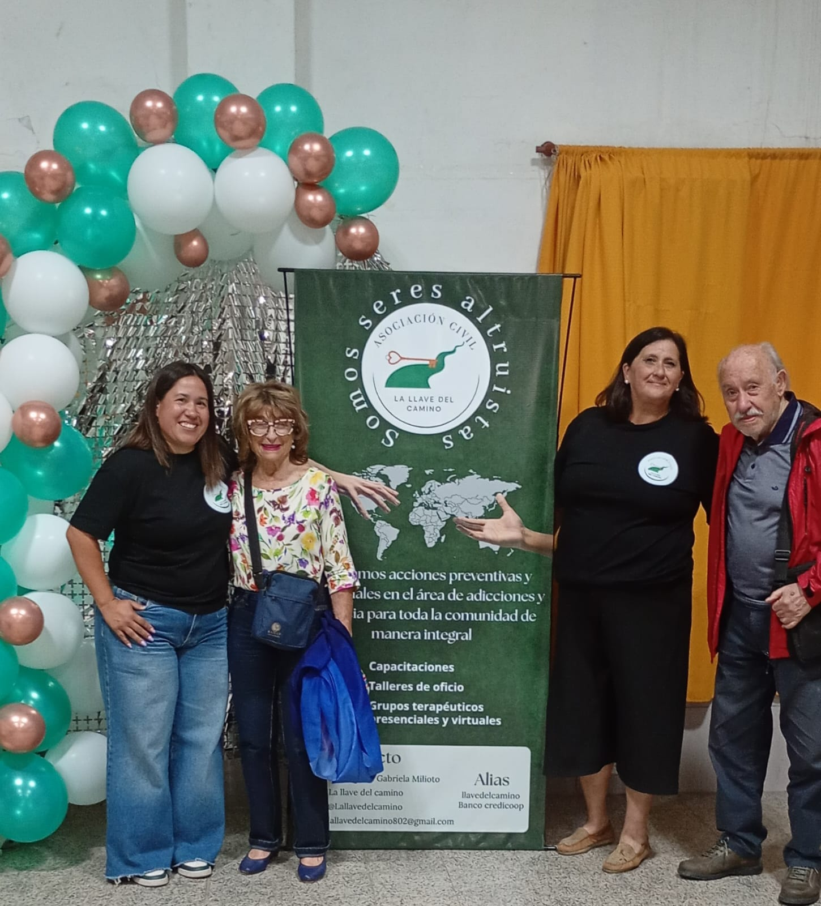
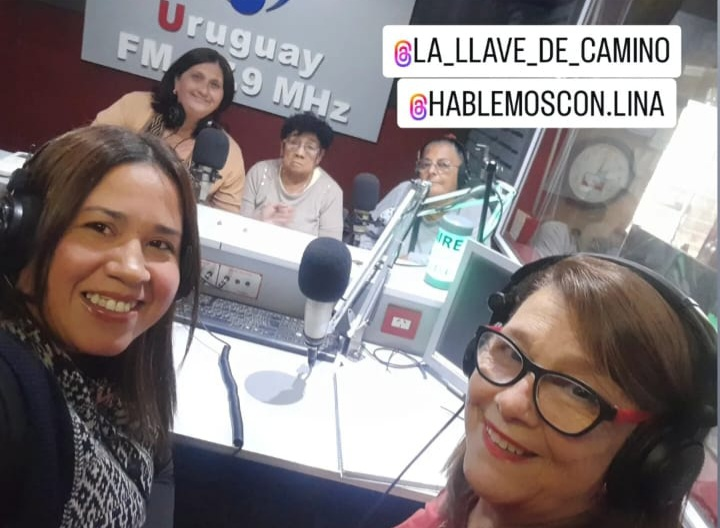
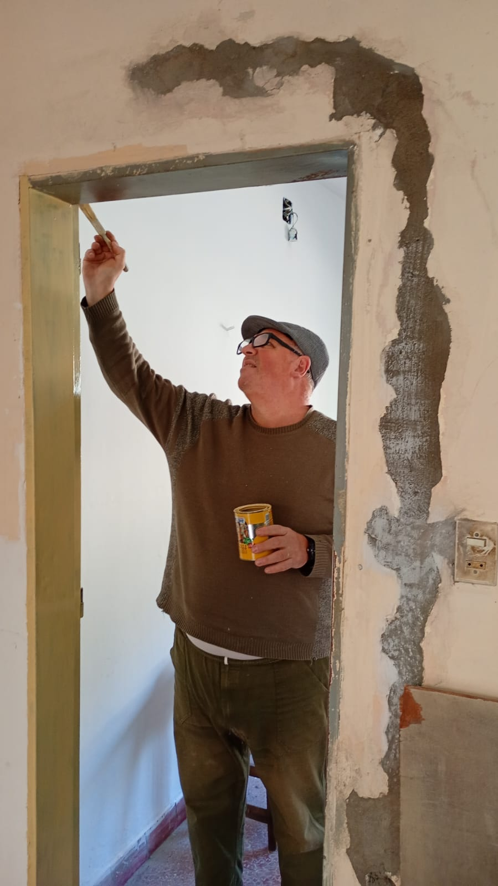
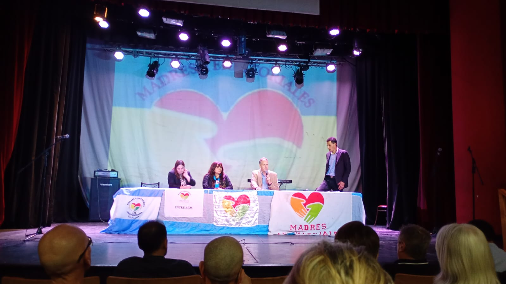
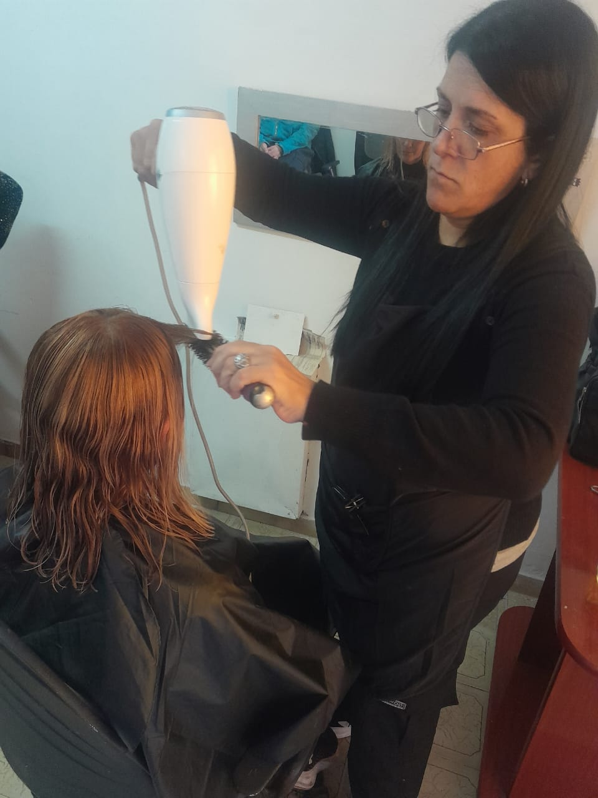

Refugio
Para personas en situación de calle

Desde hace años acompañamos a personas, familias y comunidades en Rosario, construyendo redes de apoyo para la prevención y el abordaje integral de adicciones y violencias.
Quiero colaborarPrevención y asistencia integral para mujeres desde los 8 años en situación de vulnerabilidad.
Espacios de arteterapia, tejido, panificado para aprender, música, taller de arte y cocina kids, marroquineria.
Abordaje activo en colegios de Rosario y en ámbitos deportivos para la prevención y contención de adicciones y violencias.
Para personas en situación de calle
Para mujeres y hombres
Para niñas adolescentes
Para mujeres junto a sus hijos menores de edad
Para mujeres y sus niños/as
Años de trayectoria
Personas acompañadas
Todos los talleres activos
Espacios de encuentro, aprendizaje, creatividad y acompañamiento para todas las edades en el Centro de Día.
Un recorrido visual por nuestras acciones comunitarias, encuentros institucionales y el crecimiento de nuestro espacio.









.jpeg)
Somos una ONG sin fines de lucro que acompaña a personas y familias en situación de consumos problemáticos, violencias y vulnerabilidad.
Nuestro objetivo es realizar acciones preventivas y de ayuda psicosocial para mejorar la calidad de vida en áreas de salud, educación, familia, cultura, laboral y social.
No hay un corazón más grande que el de un voluntario.
¿Tenés unas horas por semana para compartir? ¿Hay algo que sabés hacer y te gustaría poner al servicio de los demás?
Buscamos personas con ganas de colaborar.
No importa cuál sea tu experiencia, siempre hay una forma de ayudar.
Cocinando
Limpiando y ordenando espacios
Realizando pequeñas reparaciones
Compartiendo alguna habilidad
Ayudando en la organización de actividades y eventos
O simplemente ofreciendo tu tiempo y compromiso
Cada gesto cuenta. Cada hora compartida puede transformar una vida.
Rosario, Santa Fe
contacto@lallavedelcamino.org
+54 9 341 271 0103
@la_llave_de_camino